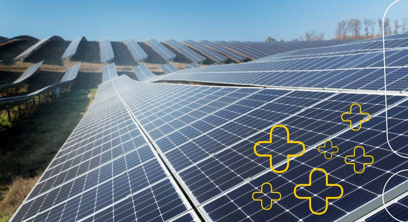
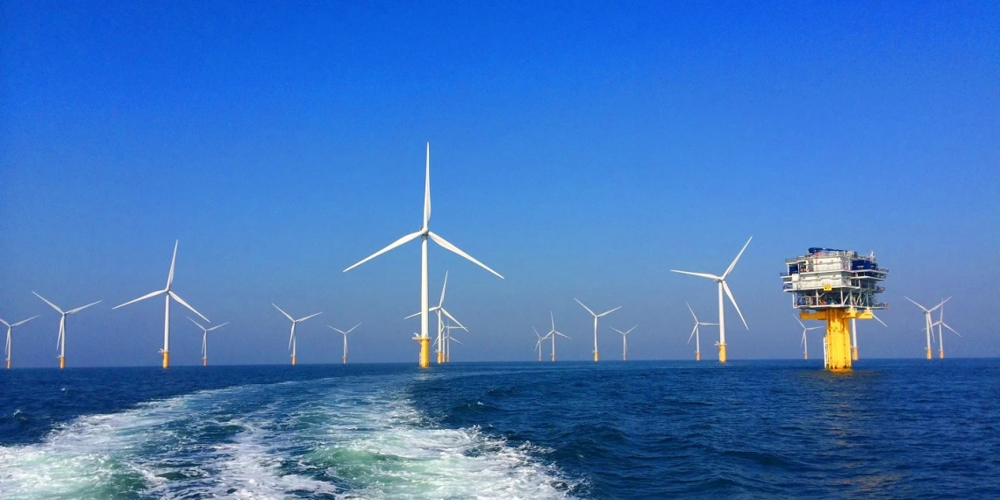
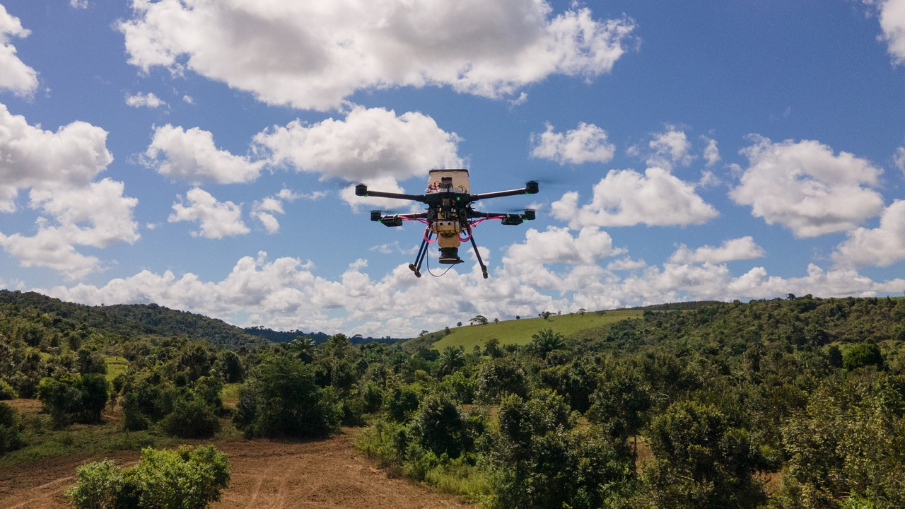
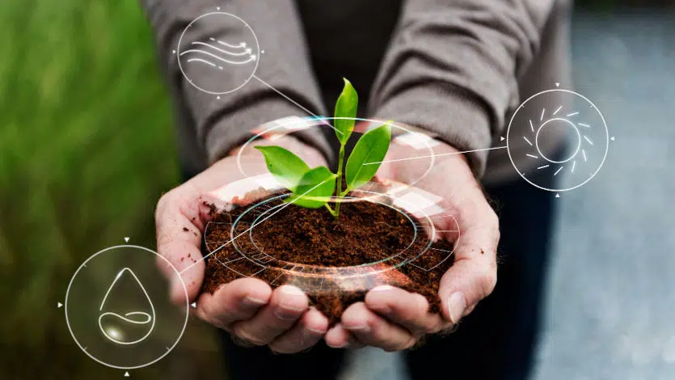
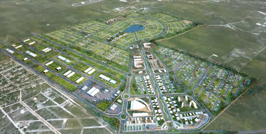

O enfrentamento da crise climática exige mudança de hábitos — mas também inovação.
Tecnologia e criatividade têm sido aliadas poderosas na busca por soluções sustentáveis que reduzem emissões, regeneram ecossistemas e melhoram nossa relação com o meio ambiente.
Aqui, celebramos as ideias que estão mudando o mundo!
Painéis solares ultrafinos, feitos com materiais como o perovskita, estão tornando a geração de energia solar mais eficiente, barata e acessível.
Essas tecnologias podem ser aplicadas em telhados, fachadas de prédios e até em roupas.
As turbinas eólicas offshore (instaladas no mar) vêm crescendo exponencialmente. Elas captam ventos constantes e mais fortes, gerando energia limpa em grande escala e com menos impacto visual nas cidades.
Empresas e ONGs estão usando drones para plantar milhares de árvores por dia em áreas degradadas.
Os drones lançam sementes encapsuladas em nutrientes, acelerando o processo de reflorestamento e recuperação de florestas.
Novos modelos de carros elétricos, bicicletas inteligentes e até aviões movidos a hidrogênio estão mudando a forma como nos deslocamos.
O futuro da mobilidade é limpo, compartilhado e cada vez mais acessível.
Plataformas brasileiras estão usando sensores, inteligência artificial e dados climáticos para apoiar agricultores a adotarem práticas regenerativas, que capturam carbono no solo e restauram a fertilidade natural da terra.
Projetos de cidades inteligentes no Brasil integram energia renovável, coleta de dados em tempo real, mobilidade elétrica e gestão de resíduos eficiente para criar comunidades mais sustentáveis e resilientes.
Inovar é também preservar. Vamos juntos construir o futuro que queremos ver!